Lab Overview
This project demonstrates a security monitoring and detection environment built in a home lab. Network traffic and security events are collected, forwarded to Splunk, analyzed, and used to identify suspicious activity.
1. Network Topology
The lab consists of network devices, security monitoring sensors, and a Splunk SIEM. Security telemetry is forwarded to Splunk for centralized monitoring and investigation.
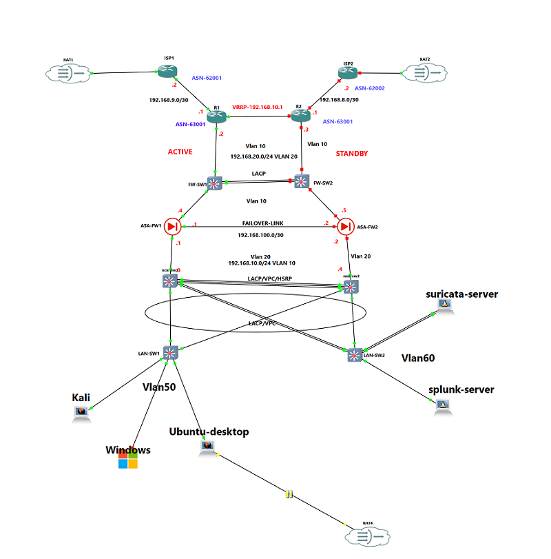
Network topology and SIEM monitoring architecture.
2. Splunk Data Inputs
Splunk is configured to receive security telemetry from multiple sources. Centralizing these logs allows events to be searched and correlated from a single SIEM platform.
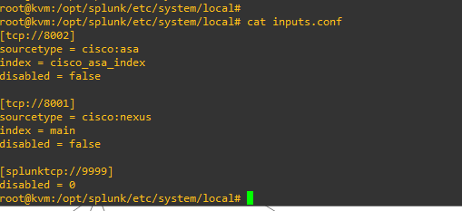
Splunk data input configuration.
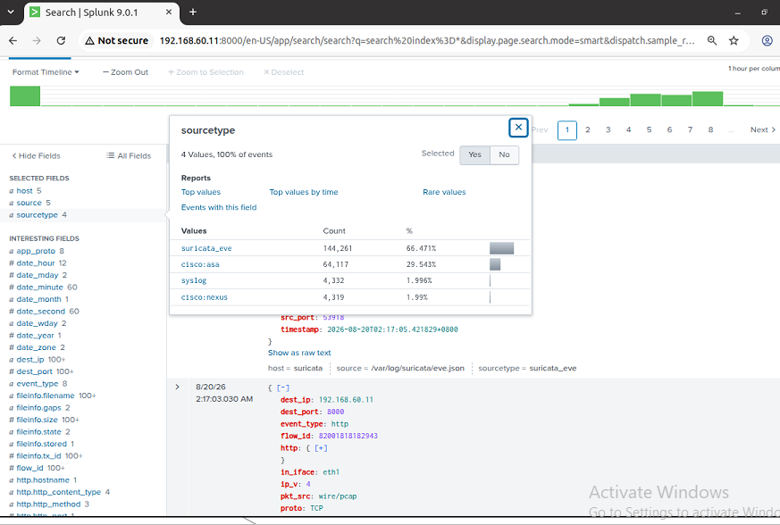
Splunk index configuration used for security telemetry.
3. Network Device Logging
Network device logging provides visibility into infrastructure activity. These logs can be forwarded to the SIEM for centralized analysis and troubleshooting.
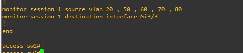
Access switch logging configuration.
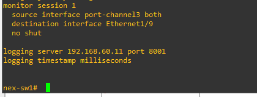
Network device logging configuration.
4. Firewall / ASA Logging
Firewall logging provides additional visibility into network connections, traffic decisions, and security events.
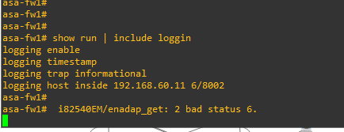
ASA logging configuration.
5. Suricata IDS Configuration
Suricata is used as a network intrusion detection sensor. It analyzes traffic and generates security events that can be forwarded to Splunk.
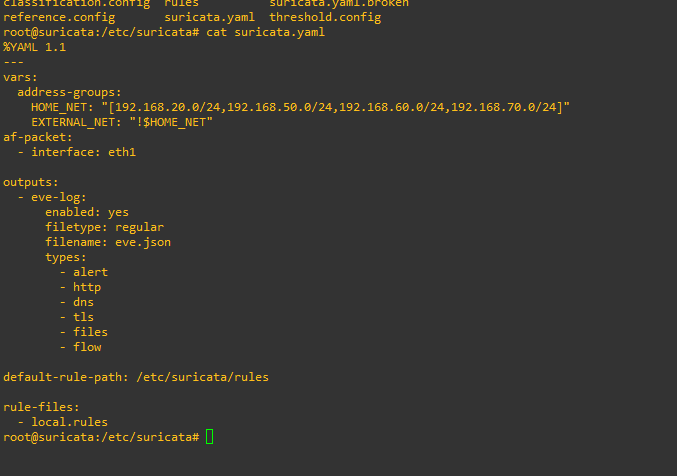
Suricata configuration.
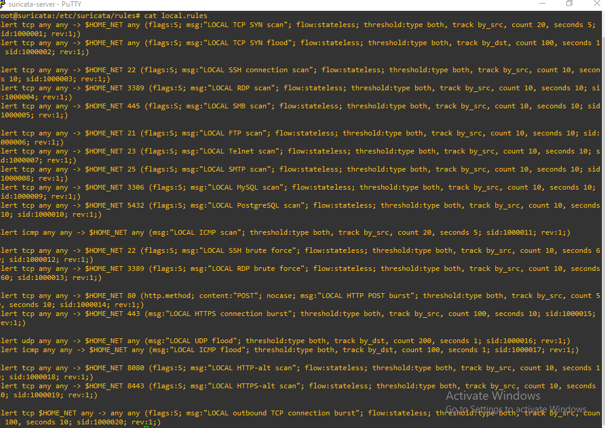
Suricata detection rules.
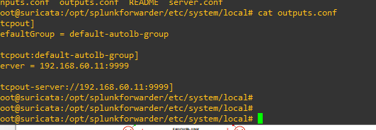
Suricata telemetry being forwarded toward Splunk.
6. Nmap Network Scan Test
A controlled Nmap scan was performed against an authorized lab system to generate reconnaissance activity and validate network monitoring visibility.
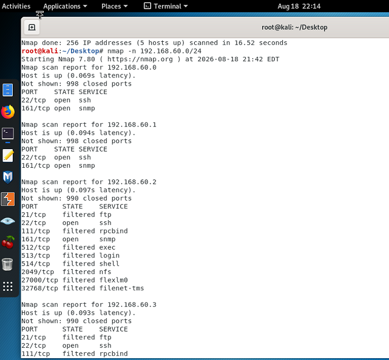
Controlled Nmap reconnaissance performed within the lab.
⚠ Network Reconnaissance
7. Brute-Force Detection Test
A controlled authentication test was performed against a dedicated lab environment to generate repeated authentication failures and validate SIEM detection capabilities.
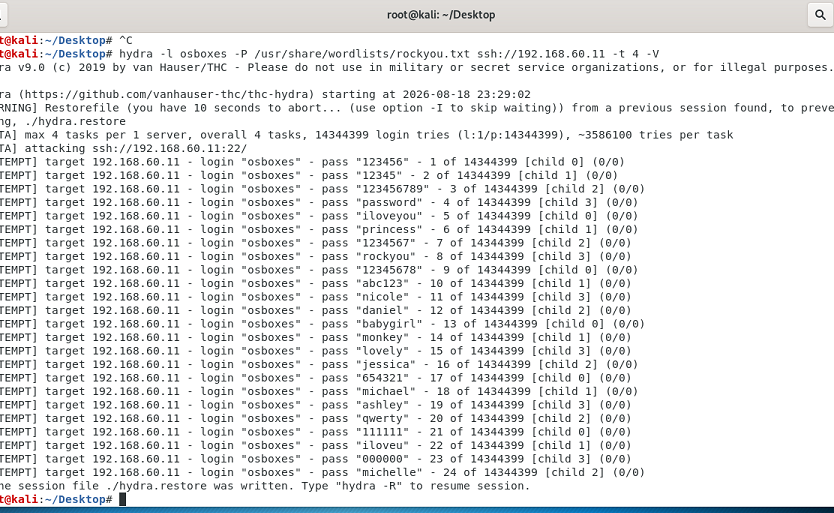
Controlled authentication testing in the authorized lab.
🚨 Authentication Attack Detected
8. Splunk SIEM Monitoring
Splunk provides centralized visibility into the telemetry generated throughout the lab. Events can be searched, filtered, correlated, and investigated from the SIEM.
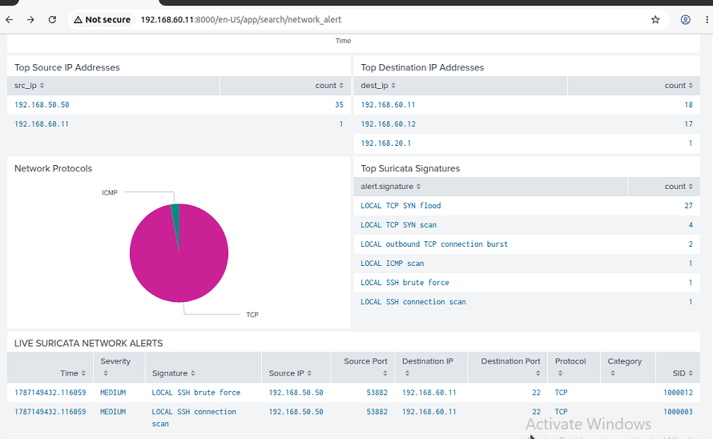
Splunk SIEM monitoring and log analysis.
9. SOC Investigation Workflow
Alert
Suspicious network or authentication activity generates telemetry in the SIEM.
Validate
Determine whether the activity is expected, authorized, or potentially malicious.
Correlate
Search related network, firewall, IDS, and authentication events to build a timeline.
Investigate
Examine source, destination, timestamps, ports, accounts, and associated security events.
Respond
Document the finding and identify appropriate containment and remediation actions.
10. Skills Demonstrated
Splunk SIEM
Log ingestion, indexing, searching, monitoring, and security event analysis.
Suricata IDS
Network traffic inspection and intrusion detection rule configuration.
Network Security
Switch, firewall, and network telemetry collection.
Threat Detection
Identification of reconnaissance and authentication attack behavior.
Incident Response
Alert validation, investigation, correlation, and documentation.
MITRE ATT&CK
Mapping observed behaviors to relevant ATT&CK techniques.
Lab Results
| Test | Technology | Result |
|---|---|---|
| Network Scanning | Nmap / Suricata / Splunk | Detected |
| Authentication Testing | Hydra / SIEM | Detected |
| Network Logging | Switch / Firewall | Collected |
| IDS Monitoring | Suricata | Configured |
| Centralized Analysis | Splunk | Operational |